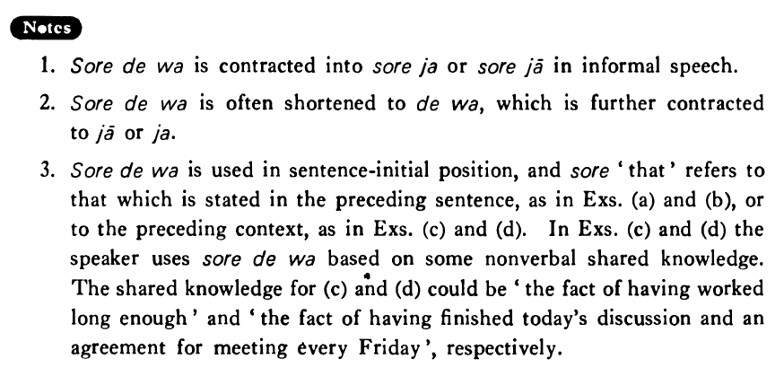

それでは (B. 414)
- (ks).
- A:このオレンジは甘くないです。 B:それではこれはどう（ですか）。
- A: This orange is not sweet. B: How about this one, then?
- (a).
- A:僕は魚も肉も嫌いです。 B:それでは何を食べるんですか。
- A: I hate both fish and meat. B: Then, what do you eat.
- (b).
- A:今日の午後テニスをしませんか。 B:今日の午後はちょっと都合が悪いんですが。 A:それでは明日の午後はどうですか。
- A: Wouldn't you like to play tennis this afternoon? B: This afternoon is not convenient for me, but... A: Then, how about tomorrow afternoon?
- (c).
- それでは二十分ぐらい休みましょう。
- Well then, let's take a break for about twenty minutes.
- (d).
- それではまた来週の金曜日に来ます。
- Well then, I'll come again next Friday.
